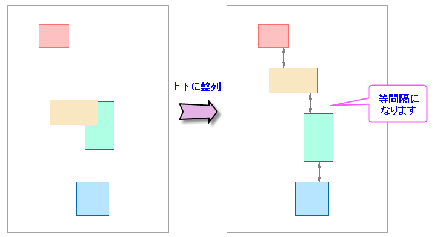

Distribute_Graph_Objects
最終更新日:2017/8/28
グラフ内に複数のオブジェクトがあり、それらを垂直または水平方向に均等に並べたいことがあります。
次の方法で行います。
すると、選択されているオブジェクトの上端と下端（あるいは右端と左端）の位置は保たれ、それぞれ等しい間隔で分布するようにオブジェクトを垂直方向（水平方向）移動します。

キーワード:グラフオブジェクト, 上下に整列, 左右に整列
必要なOriginのバージョン: Origin 2018 SR0以降